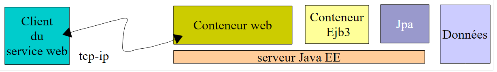
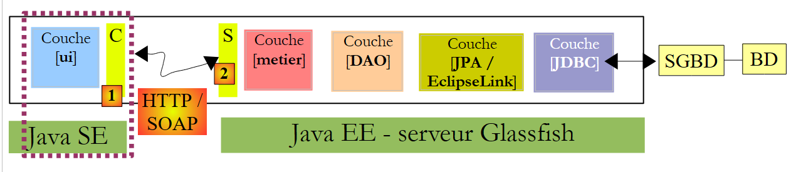
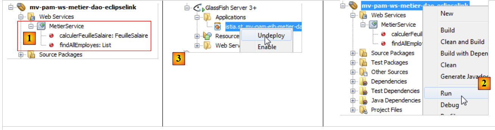
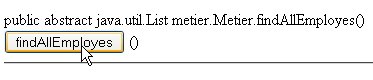
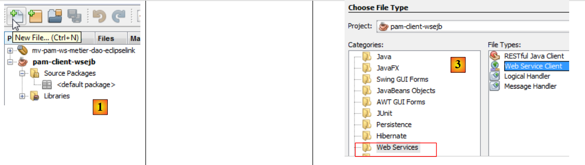
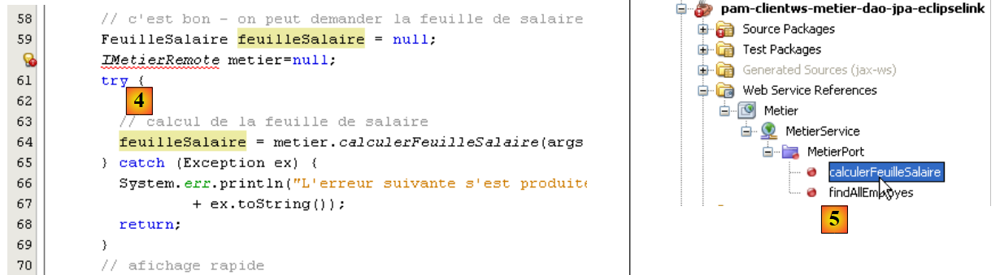
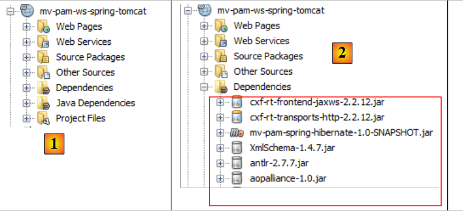
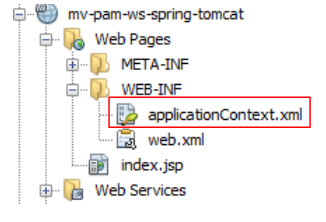
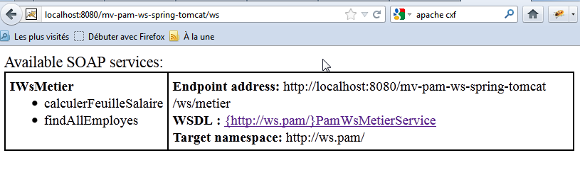

8. Version 4 – client / serveur dans une architecture de service web
Dans cette nouvelle version, l'application [Pam] va s'exécuter en mode client / serveur dans une architecture de service web. Revenons sur l'architecture de l'application précédente :
 |
Ci-dessus, une couche de communication [C, RMI, S] permettait une communication transparente entre le client [ui] et la couche distante [metier]. Nous allons utiliser une architecture analogue, où la couche de communication [C, RMI, S] sera remplacée par une couche [C, HTTP / SOAP, S] :
 |
Le protocole HTTP / SOAP a l'avantage sur le protocole RMI / EJB précédent d'être multi-plateformes. Ainsi le service web peut être écrit en Java et déployé sur le serveur Glassfish alors que le client lui, pourrait être un client .NET ou PHP.
Nous allons développer cette architecture selon trois modes différents :
- le service web sera assuré par l'EJB [Metier]
- le service web sera assuré par une application web utilisant l'EJB [Metier]
- le service web sera assuré par une application web utilisant Spring
Un service web peut être implémenté de diverses façons au sein d'un serveur Java EE :
- par une classe annotée @WebService qui s'exécute dans un conteneur web
 |
- par un EJB annoté @WebService qui s'exécute dans un conteneur EJB
 |
Nous commençons par cette dernière architecture.
8.1. Service web implémenté par un EJB
8.1.1. La partie serveur
8.1.1.1. Le projet Netbeans
Commençons par créer un nouveau projet maven copie du projet EJB [mv-pam-ejb-metier-dao-jpa-eclipselink] :
 |
Dans l'architecture suivante :
 |
la couche [metier] va être le service web contacté par la couche [ui]. Cette classe n'a pas besoin d'implémenter une interface. Ce sont des annotations qui transforment un POJO (Plain Ordinary Java Object) en service web. La classe [Metier] qui implémente la couche [metier] ci-dessus, est transformée de la façon suivante :
package metier;
...
@WebService
@Stateless()
@TransactionAttribute(TransactionAttributeType.REQUIRED)
public class Metier implements IMetierLocal,IMetierRemote {
// références sur les couches [DAO]
@EJB
private ICotisationDaoLocal cotisationDao = null;
@EJB
private IEmployeDaoLocal employeDao=null;
@EJB
private IIndemniteDaoLocal indemniteDao=null;
// obtenir la feuille de salaire
@WebMethod
public FeuilleSalaire calculerFeuilleSalaire(String SS,
...
}
// liste des employés
@WebMethod
public List<Employe> findAllEmployes() {
...
}
// important - pas de getters et setters pour les EJB
}
- ligne 4, l'annotation @WebService fait de la classe [Metier] un service web. Un service web expose des méthodes à ses clients. Celles-ci doivent être annotées par l'attribut @WebMethod.
- lignes 19 et 25 : les deux méthodes de la classe [Metier] deviennent des méthodes du service web.
- ligne 29 : il est important que les getters et setters soient supprimés sinon ils seront exposés dans le service web et cela cause des erreurs de sécurité.
L'ajout de ces annotations est détecté par Netbeans qui fait alors évoluer la nature du projet :
 |
En [1], une arborescence [Web Services] est apparue dans le projet. On y trouve le service web Metier et ses deux méthodes. L'application serveur peut être déployée [2]. Le serveur MySQL soit être lancé et sa base [dbpam_eclipselink] exister et être remplie. Il peut être nécessaire auparavant de supprimer [3] les EJB du projet client / serveur EJB étudié précédemment pour éviter des conflits de noms. En effet, notre nouveau projet amène avec lui les mêmes EJB que ceux du projet précédent.
 |
En [1], nous voyons notre application serveur déployée sur le serveur Glassfish. Une fois le service web déployé, il peut être testé :
 |
- en [1], dans le projet courant, nous testons le service web [Metier]
- le service web est accessible via différentes URL. L'URL [2] permet de tester le service web
- en [3], un lien sur le fichier XML définissant le service web. Les clients du service web ont besoin de connaître l'URL de ce fichier. C'est à partir de lui qu'est générée la couche cliente (stubs) du service web.
- en [4,5], un formulaire permettant de tester les méthodes exposées par le service web. Celles-ci sont présentées avec leurs paramètres que l'utilisateur peut définir.
Par exemple, testons la méthode [findAllEmployes] qui n'a besoin d'aucun paramètre :
 |
Ci-dessus, nous testons la méthode. Nous recevons alors la réponse ci-dessous (vue partielle). Nous y retrouvons bien les deux employés avec leurs indemnités. Le lecteur est invité à tester de la même façon la méthode [4] en lui passant les trois paramètres qu'elle attend.

8.1.2. La partie cliente
 |
8.1.2.1. Le projet Netbeans du client console
Nous créons maintenant un projet Java de type [Java Application] pour la partie client de l'application. Il n'a pas été possible (juin 2012) de créer un projet Maven pour ce client. Une erreur survient, semble connue sur le net mais reste non résolue.
 |  |
Une fois le projet créé, nous indiquons qu'il sera client du service web que nous venons de déployer sur le serveur Glassfish :
 |
- en [2], nous sélectionnons le nouveau projet et activons le bouton [New File]
- en [3], nous indiquons que nous voulons créer un client de service web
 |
- avec [4], nous allons désigner le projet Netbeans du service web
- dans la fenêtre [5], sont listés tous les projets ayant une branche [Web Services], ici uniquement le projet [mv-pam-ws-metier-dao-eclipselink].
- un projet peut déployer plusieurs services web. En [6], nous désignons le service web auquel on veut se connecter.
 |
- en [7], est affichée l'URL de définition du service web. Cette URL est utilisée par les outils logiciels qui génèrent la couche cliente qui va s'interfacer avec le service web.
 |
- la couche cliente [C] [1] qui va être générée est constituée d'un ensemble de classes Java qui vont être mises dans un même paquetage. Le nom de celui-ci est fixé en [8].
- une fois l'assistant de création du client du service web terminé avec le bouton [Finish], la couche [C] ci-dessus est créée.
Ceci est reflété par un certain nombre de changements dans le projet :
- en [10] ci-dessus, apparaît une arborescence [Generated Sources] qui contient les classes de la couche [C] qui permettent au client [3] de communiquer avec le service web. Cette couche permet au client [3] de communiquer avec la couche [metier] [4] comme si elle était locale et non distante.
- en [11], apparaît une arborescence [Web Service References] qui liste les services web pour lesquels une couche cliente a été générée.
On notera que dans la couche [C] [10] générée, nous retrouvons des classes qui ont été déployées côté serveur : Indemnite, Cotisation, Employe, FeuilleSalaire, ElementsSalaire, Metier. Metier est le service web et les autres classes sont des classes nécessaires à ce service. On pourra avoir la curiosité de consulter leur code. On verra que la définition des classes qui, instanciées, représentent des objets manipulés par le service, consiste en la définition des champs de la classe et de leurs accesseurs ainsi qu'à l'ajout d'annotations permettant la sérialisation de la classe en flux XML. La classe Metier est devenue une interface avec dedans les deux méthodes qui ont été annotées @WebMethod. Chacune de celles-ci donne naissance à deux classes, par exemple [CalculerFeuilleSalaire.java] et [CalculerFeuilleSalaireResponse.java], où l'une encapsule l'appel à la méthode et l'autre son résultat. Enfin, la classe MetierService est la classe qui permet au client d'avoir une référence sur le service web Metier distant :
La méthode getMetierPort de la ligne 2 permet d'obtenir une référence sur le service web Metier distant.
8.1.2.2. Le client console du service web Metier
Il ne nous reste plus qu'à écrire le client du service web Metier. Nous recopions la classe [MainRemote] du projet [mv-pam-client-metier-dao-jpa-eclipselink] qui était un client d'un serveur EJB, dans le nouveau projet.
 |
- en [1], la classe du client du service web. La classe [MainRemote] présente des erreurs. Pour les corriger, on commencera par supprimer toutes les instructions [import] existantes dans la classe et on les régènerera par l'option [Fix Imports]. En effet, certaines des classes utilisées par la classe [MainRemote] font désormais partie du package [client] généré.
- en [3], le morceau de code où la couche [metier] est instanciée [3]. Elle l'est avec du code JNDI pour obtenir une référence sur un EJB distant.
Nous faisons évoluer le code de la façon suivante :
- le code JNDI est supprimé
- la classe [PamException] n'existant pas côté client, nous supprimons le catch associé pour ne garder que le catch sur la classe mère [Exception].
 |
- en [4], il nous reste à obtenir une référence sur la service web distant [Metier] afin de pouvoir appeler sa méthode [calculerFeuilleSalaire].
- en [5], avec la souris, nous tirons (drag) la méthode [calculerFeuilleSalaire] du service web [Metier] pour la déposer (drop) en [4]. Du code est généré [6]. Ce code générique peut être ensuite adapté par le développeur.
 |
- ligne 112, on voit que [calculerFeuilleSalaire] est une méthode de la classe [client.Metier] (ligne 111). Maintenant que nous savons comment obtenir la couche [metier], le code précédent peut être réécrit de la façon suivante :
La ligne 7 récupère une référence sur le service web Metier. Ceci fait, le code de la classe ne change pas, si ce n'est quand même qu'en ligne 10, ce n'est pas l'exception de type [Exception] qui est gérée mais le type plus général Throwable, la classe parent de la classe Exception. S'il y a exception, nous affichons toutes les causes imbriquées de celle-ci jusqu'à la cause originelle.
Nous sommes prêts pour les tests :
- s'assurer que le SGBD MySQL5 est lancé, que la base dbpam_eclipselink est créée et initialisée
- s'assurer que le service web est déployé sur le serveur Glassfish
- construire le client (Clean and Build)
- configurer l'exécution du client
 |
- exécuter le client
Les résultats dans la console sont les suivants :
Avec la configuration suivante :

on obtient les résultats suivants :
On notera qu'alors que le service web [Metier] envoie une exception de type [PamException] l'exception reçue par le client est de type [SOAPFaultException]. Même dans la chaîne des exceptions, on ne voit pas apparaître le type [PamException].
8.1.3. Le client swing du service web Metier
Travail à faire : porter le client swing du projet [mv-pam-client-ejb-metier-dao-jpa-eclipselink] dans le nouveau projet afin que lui aussi soit client du service web déployé sur le serveur Glassfish.
8.2. Service web implémenté par une application web
Nous nous plaçons maintenant dans le cadre de l'architecture suivante :
 |
Le service web est assuré par une application web exécutée au sein du conteneur web du serveur Glassfish. Ce service web va s'appuyer sur l'EJB [Metier] déployé lui dans le conteneur EJB3.
8.2.1. La partie serveur
Nous créons une application web :
 |
- en [1], nous créons un nouveau projet
- en [2], ce projet est de type [Web Application]
- en [3], nous lui donnons le nom [mv-pam-ws-ejb-metier-dao-eclipselink]
 |
- en [4], nous choisissons la version Java EE 6
- en [6], le projet créé
Sur le schéma ci-dessous, l'application web créée va s'exécuter dans le conteneur web. Elle va utiliser l'EJB [Metier] qui lui, sera déployé dans le conteneur EJB du serveur.
 |
Pour que l'application web créée ait accès aux classes associées à l'EJB [Metier], nous ajoutons aux bibliothèques de l'application web [mv-pam-ws-ejb-metier-dao-eclipselink], la dépendance du serveur EJB [mv-pam-ejb-metier-dao-eclipselink] déjà étudié.
 |
- en [1], on ajoute un projet aux dépendances du projet web,
- en [2], on sélectionne le projet [mv-pam-ejb-metier-dao-eclipselink],
- en [3], le type de la dépendance est ejb,
- en [4], la portée de la dépendance est provided, c'est à dire qu'elle sera fournie par l'environnement d'exécution,
- en [5], la dépendance a été ajoutée.
Pour créer le même service web que précédemment, il nous faut :
- créer une classe taguée @Webservice
- avec deux méthodes calculerFeuilleSalaire et findAllEmployes taguées @WebMethod
Nous créons une classe [PamWsEjbMetier] dans un package [pam.ws] :
 |
 |
La classe [PamWsEjbMetier] est la suivante :
- lignes 7-10 : la classe importe des classes du module EJB [pam-serveurws-metier-dao-jpa-eclipselink] dont le projet Maven a été ajouté aux dépendances du projet.
- ligne 12 : la classe est un service web
- ligne 13 : elle implémente l'interface IMetier définie dans le module EJB
- lignes 18-19 : la méthode calculerFeuilleSalaire est exposée comme méthode du service web
- lignes 23-24 : la méthode findAllEmployes est exposée comme méthode du service web
- lignes 15-16 : l'interface locale de l'EJB [Metier] est injectée dans le champ de la ligne 16. Nous utilisons l'interface locale car l'application web et le module EJB s'exécutent dans la même JVM.
- lignes 20 et 25 : les méthodes calculerFeuilleSalaire et findAllEmployes délèguent leur traitement aux méthodes de même nom de l'EJB [Metier]. La classe ne sert donc qu'à exposer à des clients distants les méthodes de l'EJB [Metier] comme des méthodes d'un service web.
Dans Netbeans, l'application web est reconnue comme exposant un service web :
 |
Pour déployer le service web sur le serveur Glassfish, il nous faut à la fois déployer :
- le module web dans le conteneur web du serveur
- le module EJB dans le conteneur EJB du serveur
Pour cela, nous avons besoin de créer une application de type [Enterprise Application] qui va déployer les deux modules en même temps. Pour ce faire, il faut que les deux projets soient chargés dans Netbeans [2].
Ceci fait, nous créons un nouveau projet [3].
 |
- en [4], nous choisissons un projet de type [Enterprise Application].
- en [5], nous donnons un nom au projet
 |
- en [6], nous configurons le projet. La version de Java EE sera Java EE 6. Un projet d'entreprise peut être créé avec deux modules : un module EJB et un module Web. Ici, le projet d'entreprise va encapsuler le module Web et le module EJB déjà créés et chargés dans Netbeans. Donc nous ne demandons pas la création de nouveaux modules.
- en [7], le projet d'entreprise [mv-pam-webapp-ear] ainsi créé. Un autre projet Maven a été créé en même temps [mv-pam-webapp]. Nous ne nous en occuperons pas.
- en [8], nous ajoutons des dépendances au projet d'entreprise
 |
- en [9], on ajoute le projet web de type war,
- en [10], on ajoute le projet EJB de type ejb,
 |
- en [11], le projet d'entreprise avec ses deux dépendances.
Nous construisons le projet d'entreprise par un Clean and Build. Nous sommes quasiment prêts à le déployer sur le serveur Glassfish. Auparavant il peut être nécessaire de décharger les applications déjà chargées sur le serveur afin d'éviter d'éventuels conflits de noms d'EJB [11] :
 |
Le serveur MySQL doit être lancé et la base [dbpam_eclipselink] disponible et remplie. Ceci fait, l'application d'entreprise peut être déployée [12]. En [13], on peut voir qu'elle a bien été déployée sur le serveur Glassfish.
Nous pouvons tester le service web qui vient d'être déployé :
 |
- en [1], nous demandons à tester le service web [PamWsEjbMetier]
- en [2], la page de test. Nous laissons au lecteur le soin de conduire les tests.
8.2.2. La partie cliente
Travail à faire : en suivant la démarche décrite au paragraphe 8.1.2.1, construire un client console du service web précédent.
8.3. Service web implémenté avec Spring et Tomcat
Nous nous plaçons maintenant dans le cadre de l'architecture suivante :
 |
Le service web est assuré par une application web exécutée au sein du conteneur web du serveur Tomcat. L'architecture de l'application sera la suivante :
 |
Nous nous appuierons sur le projet [mv-pam-spring-hibernate] construit au paragraphe 5.11 :
 |
8.3.1. La partie serveur
Nous créons une application Maven de type web nommée [mv-pam-ws-spring-tomcat] [1]:
 |
Nous modifions le fichier [pom.xml] pour y inclure les dépendances [2] suivantes :
<dependencies>
<dependency>
<groupId>${project.groupId}</groupId>
<artifactId>mv-pam-spring-hibernate</artifactId>
<version>${project.version}</version>
</dependency>
<!-- Apache CXF dependencies -->
<dependency>
<groupId>org.apache.cxf</groupId>
<artifactId>cxf-rt-frontend-jaxws</artifactId>
<version>2.2.12</version>
</dependency>
<dependency>
<groupId>org.apache.cxf</groupId>
<artifactId>cxf-rt-transports-http</artifactId>
<version>2.2.12</version>
</dependency>
</dependencies>
- lignes 3-7 : la dépendance sur le projet [spring-pam-jpa-hibernate],
- lignes 8-17 : les dépendances sur le framework Apache CXF [http://cxf.apache.org/]. Celui-ci facilite la création de services web.
Ce fichier [pom.xml] amène de nombreuses dépendances [2].
Revenons à l'architecture de l'application :
 |
Les appels au service web que nous allons construire sont gérés par une servlet du framework CXF. Cela se traduit dans le fichier [WEB-INF / web.xml] de la façon suivante :
<?xml version="1.0" encoding="UTF-8"?>
<web-app version="2.5" xmlns="http://java.sun.com/xml/ns/javaee" xmlns:xsi="http://www.w3.org/2001/XMLSchema-instance" xsi:schemaLocation="http://java.sun.com/xml/ns/javaee http://java.sun.com/xml/ns/javaee/web-app_2_5.xsd">
<display-name>mv-pam-ws-spring-tomcat</display-name>
<listener>
<listener-class>org.springframework.web.context.ContextLoaderListener</listener-class>
</listener>
<!-- Configuration de CXF -->
<servlet>
<servlet-name>CXFServlet</servlet-name>
<servlet-class>org.apache.cxf.transport.servlet.CXFServlet</servlet-class>
<load-on-startup>1</load-on-startup>
</servlet>
<servlet-mapping>
<servlet-name>CXFServlet</servlet-name>
<url-pattern>/ws/*</url-pattern>
</servlet-mapping>
<session-config>
<session-timeout>
30
</session-timeout>
</session-config>
<welcome-file-list>
<welcome-file>index.jsp</welcome-file>
</welcome-file-list>
</web-app>
- le framework CXF a une dépendance sur Spring. Lignes 4-6 : un listener est déclaré. La classe correspondante va être chargée en même temps que l'application web. Elle va exploiter le fichier de configuration de Spring [WEB-INF / applicationContext.xml] :
 |
- lignes 8-12 : la servlet CXF qui va gérer les appels au service web que nous allons créer,
- lignes 13-16 : les URL traitées par la servlet CXF seront du type /ws/*. Les autres ne seront pas traitées par CXF.
Pour définir le service web, nous définissons une interface et son implémentattion :
 |
L'interface [IWsMetier] sera la suivante :
package pam.ws;
import javax.jws.WebService;
import metier.IMetier;
@WebService
public interface IWsMetier extends IMetier{
}
- ligne 7 : l'interface [IWsMetier] dérive de l'interface [IMetier] de la couche [métier] du projet [mv-pam-spring-hibernate],
- ligne 6 : l'interface [IWsMetier] est celle d'un service web.
La classe d'implémentation de cette interface est la suivante :
package pam.ws;
import java.util.List;
import javax.jws.WebMethod;
import javax.jws.WebService;
import jpa.Employe;
import metier.FeuilleSalaire;
import metier.IMetier;
@WebService
public class PamWsMetier implements IWsMetier {
// couche métier
private IMetier metier;
// constructeur
public PamWsMetier(){
}
@WebMethod
public FeuilleSalaire calculerFeuilleSalaire(String SS, double nbHeuresTravaillees, int nbJoursTravailles) {
return metier.calculerFeuilleSalaire(SS, nbHeuresTravaillees, nbJoursTravailles);
}
@WebMethod
public List<Employe> findAllEmployes() {
return metier.findAllEmployes();
}
// getters et setters
public void setMetier(IMetier metier) {
this.metier = metier;
}
}
- ligne 11 : la classe [PamWsMetier] implémente l'interface définie précédemment,
- ligne 10 : définit la classe comme un service web,
- ligne 14 : la couche [métier] sera injectée par Spring,
- lignes 21, 26 : l'annotation @WebMethod fait d'une méthode, une méthode exposée par le service web,
- lignes 23, 28 : les méthodes sont implémentées à l'aide de la couche [métier].
Il nous reste à définir le contenu du fichier de configuration de Spring [applicationContext.xml] :
 |
Son contenu est le suivant :
<?xml version="1.0" encoding="UTF-8"?>
<beans xmlns="http://www.springframework.org/schema/beans" xmlns:xsi="http://www.w3.org/2001/XMLSchema-instance"
xmlns:tx="http://www.springframework.org/schema/tx"
xmlns:jaxws="http://cxf.apache.org/jaxws"
xsi:schemaLocation="http://www.springframework.org/schema/beans
http://www.springframework.org/schema/beans/spring-beans-2.0.xsd
http://www.springframework.org/schema/tx
http://www.springframework.org/schema/tx/spring-tx-2.0.xsd
http://cxf.apache.org/jaxws
http://cxf.apache.org/schemas/jaxws.xsd">
<!-- Apache CXF -->
<import resource="classpath:META-INF/cxf/cxf.xml" />
<import resource="classpath:META-INF/cxf/cxf-extension-soap.xml" />
<import resource="classpath:META-INF/cxf/cxf-servlet.xml" />
<!-- couches basses -->
<import resource="classpath:spring-config-metier-dao.xml" />
<!-- service web -->
<bean id="wsMetier" class="pam.ws.PamWsMetier">
<property name="metier" ref="metier"/>
</bean>
<jaxws:endpoint id="wsmetier"
implementor="#wsMetier"
address="/metier">
</jaxws:endpoint>
</beans>
- lignes 13-15 : on importe des fichiers de configuration Apache CXF. Ceux-ci sont cherchés dans le Classpath du projet (attribut classpath:),
- lignes 4, 9, 10 : des espaces de noms spécifiques à Apache CXF sont déclarés,
- ligne 18 : on importe le fichier de configuration Spring du projet [mv-pam-spring-hibernate],
- lignes 21-23 : définissent le bean du service web avec sa dépendance sur la couche [métier] (ligne 22),
- lignes 24-27 : définissent le service web lui-même,
- ligne 25 : le bean Spring implémentant le service web est celui défini ligne 21 ;
- ligne 26 : définit l'URL à laquelle le service web sera disponible, ici /metier. Combinée à la forme que doivent avoir les URL traitées par Apache CXF (cf fichier web.xml), cette URL devient /ws/metier.
Notre projet est prêt à être exécuté. Nous l'exécutons (Run) et demandons l'URL [http://localhost:8080/mv-pam-ws-spring-tomcat/ws] dans un navigateur :

La page liste tous les services web déployés. Ici, il n'y en a qu'un. Nous suivons le lien WSDL :
 |
Le texte affiché [1] est celui d'un fichier XML qui définit les fonctionnalités du service web, comment l'appeler et quelles réponses il envoie. On notera l'URL [2] de ce fichier WSDL. Tous les clients du service web ont besoin de la connaître.
8.3.2. La partie cliente
Travail à faire : en suivant la démarche décrite au paragraphe 8.1.2.1, construire un client console du service web précédent.
Note : pour indiquer l'URL du fichier WSDL du service web, on procèdera comme suit :
 |
On mettra en [3], l'URL notée précédemment en [2].